Справочник разработчика
Справочник разработчика.
2022 © Сомов Евгений Павлович
Created with the Personal Edition of HelpNDoc: Create help files for the Qt Help Framework
Язык программирования
Язык программирования Java, Python, PHP, JS
Инкапсуляция - механизм программирования объединяющий код и данные которыми он манипулирует.
- Объект - это компонент поддерживающий инкапсуляцию.
- Класс - определяет тип объекта.
Полиморфизм - это свойство, позволяющее с помощью одного интерфейса обращаться к общему классу действий. (один интерфейс - множество методов)
Наследование - это процесс в ходе которого один объект приобретает свойста и методы другого объекта.
Объектно-ориентированное программирование - методология программирования, основанная на представлении программы в виде совокупности объектов, каждый из которых является экземпляром определенного класса, а классы образуют иерархию наследования.
Created with the Personal Edition of HelpNDoc: Free help authoring tool
Java
Синтаксис языка Java
|
Переменные int x; int y = 10; double d = 4.5d; float f = 3.14159265f; byte b = 28; boolean b = false; long l = 111111111; char c = 'a'; String s = "text"; String s = new String("text"); public static int x; private ArrayList<String> args; |
Константа final double pi = 3.14d; public static final String URL = "url"; Преобразование типов данных long lg = 111111111; Short sh; sh = (Short) lg; int x = 10; String str = (String)x; str = s.toString(); |
|
Массивы int[] a = new int[5]; String[] s = new String[8]; int[] arrayInt = new int[3]; arrayInt[0] = 10; arrayInt[1] = 20; arrayInt[2] = 30; String[]str = {"one", "two"}; String[]str = new String[] {"Hello", "World"}; str[1] = "John"; |
Многомерные массивы int[][] m = new int[10][6]; m[5][4] = 10; m[5][5] = 20; String[][] s = new String[2][]; s[0] = new String[7]; s[0][6] = "text"; Преобразование строки в массивы String s = "text"; char[] c = s.toCharArray(); |
|
ArrayList - неопределенный тип массива ArrayList<String> list = new ArrayList<String>(); list.add("text"); println(list[0]); |
|
|
Условия int a = 10; if(a < 10) { println("a < 10"); } else if(a > 10) { println("a > 10"); } else { println("a = 0"); } if(a == 10 && b != 10) println("PASSED"); else println("FAILED"); |
Условный оператор ? int a = 10; a = a < 0 ? 1 : -1; boolean b = a>10 ? true : false; == (равно) != (не равно) > (больше) >= (больше или равно) < (меньше) <= (меньше или равно) && (логическое И) || (логическое ИЛИ) |
|
Циклы for(int i = 0; i < 10; i++) { println(i.toString()); } int a = 10; while(a > 0) { a--; println(a.toString()); } int a = 0; do{ a++; println(a.toString()); }while(a < 10); |
Конструкция выбора int num = 100; switch (num) { case 99: println("99"); break; case 100: println("100"); break; default: println("other"); } |
|
Перечисление enum Days { MONDAY, TUESDAY, WEDNESDAY, THURSDAY, FRIDAY, SATURDAY, SUNDAY } Day current = Days.MONDAY; |
Обработка исключений import System.out; try { //… } catch (Exception ex) { printf(ex.getMessage()); } |
|
Классы - Простой класс public class MyClass { public String name; public void setName(String value) { name = value; } } MyClass mc = new MyClass(); ms.setName("John"); println(ms.name); |
|
|
Классы - Конструктор класса class MyClass { String name; int age; MyClass() { name = "John"; age = 30; } MyClass(String n, int a) { name = n; age = a; } void displayInfo() { System.out.printf("Name: %s \t Age: %d \n", name, age); } } |
|
|
Классы - Наследование public class MyClass1 { public String name; public int age; public void setName(String n, int a) { name = n; age = a; } } public class MyClass2 extends MyClass1 { public MyClass2(String n, int a) { super(n, a); } } |
|
|
Классы - Абстрактный класс (призван предоставлять базовый функционал для классов-наследников) abstract class MyClass1 { private String _name; public MyClass1(String name) { this._name = name; } public String getName() { return _name; } public abstract void show(); } пример использования абстрактного класса public class MyClass2 extends MyClass1 { public void show() { System.out.printf("Name: %s", super.getName()); } } MyClass2 mc2 = new MyClass2(); mc2.show(); |
|
|
Интерфейсы (может определять константы и методы, которые могут иметь или не иметь реализацию) interface IMyInterface { void show(); } public class MyClass implements IMyInterface { public void show() { System.out.printf("message"); } } MyClass mc = new MyClass(); mc.show(); |
|
|
Коллекции ArrayList - обобщенная коллекция import java.util.ArrayList; ArrayList<String> list = new ArrayList<String>(); list.add("John"); list.add("Tom"); list.add(2, "Paul"); list.get(1); list.set(1, "Bill"); list.size(); list.contains("Bob"); list.remove("Bob"); list.remove(0); |
ArrayDeque - обобщенная двунаправленная очередь import java.util.ArrayDeque; ArrayDeque<String> list = new ArrayDeque<String>(); list.add("John"); list.addFirst("Bill"); list.push("Tom"); list.addLast("Bob"); list.getFirst(); list.getLast(); while(list.peek() != null) { println(list.pop()); } |
|
LinkedList - структура данных в виде связанных списков import java.util.LinkedList; LinkedList<String> list = new LinkedList<String>(); list.add("Tom"); list.addLast("John"); list.addFirst("Bill"); list.size(); list.get(1); list.set(1, "Bob"); list.contains("Paul"); list.remove("Bob"); list.removeFirst(); list.removeLast(); list.remove(1); for(String value:list) { println(value); } |
List - список import java.util.List; List<String> list = new List<String>(); list.add("John"); list.get(0); list.clear(); list.remove(0); list.set(1, "Tom"); File dir = new File(pathFolder); File[] files = dir.listFiles(); List<File> listFiles = Array.asList(files != null ? files:new File[0]); for(File file:listFiles) { println(file.getPath()); } |
|
Лямбда - выражение interface Option { int calculate(int x, int y); } Option option; option = (x, y) -> x + y; option.calculate(10, 20); |
|
|
Чтение и запись текстовых файлов import java.io.*; // записать в файл try(FileWriter writer = new FileWriter("note.txt", false)) { String text = "Hello World"; writer.write(text); writer.append("\n"); writer.flush(); } catch (IOException ex) { println(ex.getMessage()); } // прочитать из файла try(FileReader reader = new FileReader("note.txt")) { int i; while((i = reader.read()) != -1){ println((char)i); } } catch (IOException ex) { println(ex.getMessage()); } |
|
|
Чтение json файлов import org.json.simple.JSONObject; import org.json.simple.JSONArray; import org.json.simple.parser.JSONParser; import org.json.simple.parser.ParseException; Object obj; File file = new File("C:/file.json"); if(file.exists()) { obj = new JSONParser().parser( new FileReader("C:/file.json")); } JSONObject jObj = (JSONObject)obj; String title = jObj.get("title").toString(); ArrayList<String> arguments = new ArrayList<String>(); JSONArray args = (JSONArray) jObj.get("arguments"); Iterator argsItr = args.iterator(); while (argsItr.hasNext()) { String argument = argsItr.next().toString(); arguments.add(argument); } |
|
|
Разное Определить расширение имени файла if(filename.lastIndexOf("json") >= 0) { } Определить адрес папки с проектом System.getProperty("user.dir"); Установить глобальное свойство System.setProperty("webdriver.chrome.driver", "C:/driver/chromedriver.exe"); Работа с датой Date date = new Date(); date.toString(); Поиск подстроки в строке if(link.contains("mc.yandex.ru")) { } Замена символов в строке String name = filename.replaceAll(" ", "_"); |
|
Created with the Personal Edition of HelpNDoc: Free EBook and documentation generator
Python
Синтаксис языка Python
В Python не используются фигурные скобки для отделения блоков кода, вместо них используются отступы и двоеточие.
|
Переменные (указывать тип данных не нужно) name = "John" # текст age = 30 # число a = b = c = 1000 # множественное присвоение print name # вывод на экран Удаление переменной num = 100 del num # удаление переменной Вывод подстроки пять символов из строки text = "Hello World!" print text[0:5] |
|
|
Списки (массив) my_list = [True, 786, 3.14, 'text', 70.2] print my_list print my_list[0] Кортежи (элементы не могут быть изменены) my_tuple = (3.14, 'Pi', False) print my_tuple[0] Словари (ассоциативный массив) my_dict = {} my_dict['name'] = 'John' my_dict['age'] = 30 print my_dict['name'] my_dict = {"name":"John", "age":30, 2:True, "list":[1,2,3]} print my_dict.keys() print my_dict.values() Сеты (хранит только уникальные значения) my_set = set() my_set = {"Hello", "World"} |
|
|
Преобразование типов int(12.4) # в целое число 12 long(20) # в длинное число 20L float(10) # в число с запятой 10.0 complex(20) # в комплексное число 20+0j str(10) # в строку '10' tuple("hello") # в кортеж ("h","e","l","l","o") list("hello") # в список ["h","e","l","l","o"] dict([(1,2),(3,4)]) # в словарь {1:2, 3:4} |
|
|
Условия if n > 100: print 'больше 100' elif n < 100: print 'меньше 100' else: print 'равно 100' |
if n > 0: print 'больше 0' if m > 10: print 'больше 10' elif m < 10: print 'меньше 10' elif n < 0: print 'меньше 0' else: print 'равно 0' |
|
Циклы While i = 10 while i > 0: print 'шаг %s' % i i -= 1 print "цикл завершен" |
|
|
Цикл For word = "text" for letter in word: print letter list_1 = ["01", "02", "03"]; for item in list_1: print item list_2 = {"01":"text1", "02":"text2"} for key in list_2: print 'ключ %s значение %s' % (key, list_2[key]) Перебор элементов по индексу days = ["Sun", "Mon", "Tue", "Wed", "Thu", "Fri", "Sat"] for index in range(len(days)): print days[index] |
|
|
Команда break for day in days: if day == "Wed": break |
while True: if n < 0: break |
|
Функции def my_function(argument): print argument вызов функции my_function("Hello World!") |
|
|
Обязательные аргументы функции def my_function(a, b): if a > b: print a else print b вызов функции my_function(5, 6) |
Аргументы - ключевые слова def my_function(name, age): print name, "is", age вызов функции my_function(age=30, name="John") |
|
Аргументы заданные по умолчанию def my_function(x=10, y=20) print x, " : ", y вызов функции my_function() |
Аргументы произвольной длины def my_function(*args): for a in args: print a вызов функции my_function(1,2,3,4,5) my_function("Hello", "World") |
|
Возврат значения def my_function(a, b): return a+b вызов функции n = my_function(5, 4) |
Область видимости age = 44 def global_info(): global age age += 1 print age def local_info(): age = 22 print age вызов функции print age # показано 44 global_info() # показано 45 local_info() # показано 22 |
|
Функциональное программирование Лямбда выражение (анонимная функция) multiply = lambda x,y: x * y n = multiply(21, 2) Функция map() - применяется к каждому элементу списка old_list = ['1','2','3','4','5'] new_list = list(map(int, old_list)) аналогично можно так new_list = [] for item in old_list: new_list.append(int(item)) использование map и lambda array1 = [1,2,3] array2 = [4,5,6] new_list = list(map(lambda x,y: x+y, array1, array2)) print(new_list) # в результате [5,7,9] Функция filter() - фильтрация элементов последовательности mixed = ['windows', 'linux', 'mac'] result = list(filter(lambda x: x=='mac', mixed)) print(result) # в результате [mac,mac,mac] Функция reduce() from functools import reduce items = [1,24,17,14,9,32,2] result = reduce(lambda a,b: a if(a>b) else b, items) print(result) # в результате 32 наибольший элемент Функция zip() - объединяет элементы в кортеж a = [1,2,3] b = "xyz" c = (None, True) result = list(zip(a,b,c)) print(result) # в результате [(1,'x',None),(2,'y',True)] |
|
|
Объектно-ориентированное программирование создание класса class MyClass: myperem = 0 def __init__(self, name): self.name = name self.myperem = 0 def add(self): self.myperem += 1 MyClass.myperem += 1 def info(self): print(self.name, self.myperem, MyClass.myperem) создание экземпляров класса mc1 = MyClass("text1") mc2 = MyClass("text2") обращение к атрибутам и методам класса mc1.add() mc1.info() |
|
|
Модули импортирует модуль import math print(math.sqrt(9)) print(math.pi) импортировать определенный метод модуля from math import sqrt print(sqrt(144)) импортировать все методы из модуля from math import * print(sqrt(121)) print(pi) получение всех модулей help("modules") |
|
|
создание своего модуля def hello(): print("Hello World!") (сохранить в файл mymodule.py) |
вызов модуля from mymodule import hello hello() |
|
Работа с файлами my_file = open("file.txt", "w") print(my_file.name) print(my_file.closed, my_file.mode, my_file.softspace) my_file.write("text") str = my_file.read() print(str) my_file.close() |
|
|
Обработка исключений try: i = float(input("Введите число")) print(100/i) except ValueError: print("Это не число") except ZeroDivisionError: print("На ноль делить нельзя") except: print("Неожиданная ошибка"); else: print("Выполнено без ошибок") finally: print("Это выполняется в любом случае") |
|
|
Классы Наследование класса class MyClass1: def info_1(self): print("это класс 1") class MyClass2: def info_2(self): print("это класс 2") применение наследование при создании класса class MyClass3(MyClass1, MyClass2): pass mc = MyClass3() mc.info_1() mc.info_2() |
|
|
Абстрактные классы from abc import ABC, abstractmethod class Basic(ABC) @abstractmethod def show(self): print("Hello World!"); |
|
Created with the Personal Edition of HelpNDoc: Easily create HTML Help documents
PHP
Синтаксис языка PHP
|
Переменные $a = 'строка'; $b = "строка"; $c = 25; $d = 1.25; $e = false; |
Комментарий /* многострочный комментарий */ // однострочный комментарий # однострочный комментарий Константы define("name", "value"); const MIN_VALUE = 0.0; |
|
Массивы $arr = array(1, 2, 3, 4); echo $arr[1]; $arr = array( "name" => "user", "pass" => "0000" ); echo $arr["name"]; print_r($arr); |
Ассоциативный массив $arr = array( 0 => array(1,2), 1 => array(1,2), 2 => array(1,2) ); echo $arr[0]; // Начиная с PHP 5.4 $arr = [ "name" => "user", "pass" => "0000" ]; echo $arr["name"]; |
|
Условия if(value > 10){ print("больше 10 \n"); }elseif(value < 10) { print("меньше 10 \n"); }else { print("равно 0 \n"); } |
$result = (value > 0) ? 'Yes' : 'No'; == (равно) != (не равно) > (больше) >= (больше или равно) < (меньше) <= (меньше или равно) && (логическое И) || (логическое ИЛИ) |
|
Циклы $i = 10; while ($i > 0){ print("Число: $i \n"); $i--; } $i = 0; do { $i++; print('Число: '.$i.'\n'); } while ($i < 10); for ($i = 0; $i < 10; $i++){ print_r($i); } |
$arr = [ "name" => "user", "pass" => "0000" ]; foreach ($arr as $key => $value){ echo $key." : ".$value; } $arr = [1,2,3,4]; foreach ($arr as &$value){ $value = $value * 2; print("Число: $value \n"); } |
|
Конструкция выбора $i = 1; switch ($i) { case 0: echo "i равно 0"; break; case 1: echo "i равно 1"; break; default: echo "i больше 1"; } |
Функция $a = 25; function myfunc($arg1, &$arg2) { $arg2 = 0; // меняет знач. return $arg1 * 2; } $b = myfunc(5, $a); print("$a : $b"); // 0 : 10 Анонимная функция echo function () { return 'Hello World!'; } |
|
Классы class MyClass { function myFunc() { return "text"; } } $obj = new MyClass; $message = $obj->myFunc(); print_r($message); |
Статичный класс class MyClass { public static $my_name = 'no name'; public static function myFunc() { echo $this->my_name; } } MyClass::my_name = 'John'; MyClass::myFunc(); |
|
Конструктор и наследование класса class MyClass1 { function __construct() { print "Конструктор 1"; } } class MyClass2 extends MyClass1 { protected int $x; protected int $y; function __construct(int $x = 0, int $y = 0) { parent::__construct(); $this->x = $x; $this->y = $y; print "Конструктор 2"; } } $mc2 = new MyClass1(); $mc2 = new MyClass2(10, 20); |
|
|
Модули и пространство имен namespace Step\Acceptance; class TestSteps { conts URL = "url"; public static $url = "url"; public function test(){ //... } } использование модуля use Step\Acceptance\TestSteps as TestTester; class Testing { function admin(){ $admin = new TestTester(); $admin->test(); } } |
Обработка исключений try { //... } catch (Exception $e) { echo $e->getMessage(); } finally { //... } /* Выключение */ error_reporting(0); |
Created with the Personal Edition of HelpNDoc: Easily create HTML Help documents
JavaScript
Синтаксис языка JavaScript
|
Переменные var a = 'строка'; var b = "строка"; var c = 25; var d = 1.25; let x = 100; // ES6 |
Константы const MIN_VALUE = 5; // ES6 |
|
Преобразование типов 10 + "Текст" // число 10 преобразуется в текст "10 Текст" "7" * "4" // текст преобразуется в число 7 * 4 n + " Текст" // n равно NaN это будет преобразовано в строку "NaN Текст" Явное преобразование типов с помощью функций: Number("3") String(100) Boolean([]) Object(3) n.toString() Функции синтаксического анализа: parseInt("3 мышки") // получим число 3 parseFloat("3.14 метра") // получим число 3.14 |
|
|
Условия if(value > 10){ //... }else if(value > 0) { //... }else { //... } Условный оператор ? var result = value > 0 ? 'yes' : 'no'; |
Циклы var i = 10; while (i > 0){ i--; } do { i++; } while (i < 10); for (var i = 0; i < 10; i++){ console.log(i); } var obj = {x:0, y:0}; for(var key in obj) console.log(obj[key]); |
|
var arr = [1,2,3,4,5]; arr.forEach(function(item, i, arr){ alert(i + " : " + item); }); |
|
|
Конструкция выбора var i = 5; switch (i) { case 0: alert("i равно 0"); break; case 1: alert("i равно 1"); break; default: alert("i больше 1"); } |
Массивы var arr = new Array(1, 2, 3, 4); var arr = [1, 2, 3, 4]; var arr = []; arr["name"] = "user"; arr["pass"] = "0000"; var matrix = [[1,2],[3,4],[5,6]]; var arr = [ 1, {x:1, y:2}], 2, {x:3, y:4}] ]; |
|
Объекты var point = {x:0, y:0}; var book = { "main title": "JavaScript", "sub-title": "Pocket Ref" }; var obj = new Object(); var obj = Object.create( {x:1, y:2}); var obj = { x: 1.0, get funcValue() { return this.x; }, set funcValue(value){ this.x = value; } }; |
Создание объекта — выполняется с помощью ключевого слова new Если аргументы передавать не нужно скобки можно опустить new Object; new Data; new Object(); new Point(2,3); |
|
Функции var a = 25; function myfunc(arg1, arg2) { window.a = 0; return $arg1 * 2; } myfunc(5, a); |
var point = function(arg1, arg2) { window.a = 0; return $arg1 * 2; } Анонимные функции alert(function () { return 'Hello World!'; }); |
|
Классы function MyClass(value) { this.value = value; } MyClass.prototype.myFunc = function() { return this.value; }; использование класса var c = new MyClass('текст'); c.myFunc(); function MyClass() { this.value = 'значение'; this.myFunc = functuon() { return this.value; }; } использование класса var c = new MyClass(); c.myFunc(); function MyClass(value) { var class = Object.create(MyClass.methods); class.value = value; return class; } MyClass.methods = { myFunc: function() { return this.value; } }; использование класса var c = MyClass('текст'); c.myFunc(); |
|
|
Наследование function MyClass1() { //... } MyClass1.prototype.func = function(){} function MyClass2() { //... } MyClass2.prototype = Object.create(MyClass1.prototype); |
|
|
Модули и пространство имен (function () { var CONNECT_OK = 1; function connect() { //... } }()); |
var MyProject = (function() { return { CONNECT_OK: 1, connect: connect() { //... } } }()); |
|
События document.getElementById("myButton"). addEventListener("click", onClick); document.getElementById("myButton"). removeEventListener("click", onClick); function onClick(){} window.onload = function() { alert('Документ загружен' ); }; |
|
|
Обработка исключений try { //... } catch (er) { document.write(er); } |
try { //... } finally { //... } |
|
Исключение — сигнал о произошедшей ошибке if(x < 0) throw new Error("x должен быть положительным"); |
|
|
Директива строгого режима "use strict" |
Вывод сообщения в консоль console.log('ERROR', 'message'); |
Created with the Personal Edition of HelpNDoc: Easily create Web Help sites
Язык запросов SQL
Created with the Personal Edition of HelpNDoc: Easily create PDF Help documents
SELECT
SELECT - выборка данных
Выбрать информацию всех полей из таблицы
SELECT * FROM ИмяТаблицы
Выбрать информацию указанных полей из таблицы
SELECT Поле1, Поле2, ПолеN FROM ИмяТаблицы
DISTINCT - устраняет повторяющиеся значения.
SELECT DISTINCT Поле1, Поле2 FORM ИмяТаблицы
ALL - покажет все записи даже те которые повторяются
SELECT ALL Поле1, Поле2 FORM ИмяТаблицы
Отбор строк по условию
SELECT Поле1, Поле2 FROM ИмяТаблицы WHERE (Поле1 = Значение)
Реляционные операторы
- = равный чему-либо;
- > больше чем;
- < меньше чем;
- >= больше чем или равно;
- <= меньше чем или равно;
- <> не равно;
SELECT * FROM ИмяТаблицы WHERE (text = 'Значение')
SELECT * FROM ИмяТаблицы WHERE (num = 100)
SELECT * FROM ИмяТаблицы WHERE (num > 100)
SELECT * FROM ИмяТаблицы WHERE (num < 100)
SELECT * FROM ИмяТаблицы WHERE (num >= 100)
SELECT * FROM ИмяТаблицы WHERE (num <= 100)
SELECT * FROM ИмяТаблицы WHERE (myDate = 05/12/2012)
Стандартный булевый оператор AND(И).
SELECT * FROM ИмяТаблицы WHERE (Поле1 = 100 AND Поле2 = 'Знач')
Стандартный булевый оператор OR (ИЛИ)
SELECT * FROM ИмяТаблицы WHERE (Поле1 = 100 OR Поле2 = 'Знач')
Стандартный булевый оператор NOT (НЕ) отрицание.
SELECT * FROM ИмяТаблицы WHERE NOT(Поле1 = 100 AND Поле2 = 'Знач')
Отбор значений в которые не входят указанные значения
SELECT * FROM ИмяТаблицы WHERE Поле NOT IN (2000, 2001)
SELECT * FROM ИмяТаблицы WHERE NOT Поле IN (2000, 2001)
SELECT * FROM ИмяТаблицы WHERE Поле NOT BETWEEN (2000, 2001)
SELECT * FROM ИмяТаблицы WHERE NOT Поле BETWEEN (2000, 2001)
SELECT * FROM ИмяТаблицы WHERE Поле NOT LIKE ('Знач%')
SELECT * FROM ИмяТаблицы WHERE NOT Поле LIKE ('%нач%')
SELECT * FROM ИмяТаблицы WHERE NOT ИмяПоле IS NULL
SELECT * FROM ИмяТаблицы WHERE (ИмяПоле NOT NULL)
SELECT * FROM ИмяТаблицы WHERE ИмяПоле NOT IN (2000, 2001)
Оператор IN определяет набор значений с помощью списка.
SELECT * FROM ИмяТаблицы WHERE Поле IN ('Значение1', 'Значение2')
SELECT * FROM ИмяТаблицы WHERE Поле IN (100, 200)
SELECT * FROM ИмяТаблицы WHERE Поле IN (17.00, 25.50)
Отбор значений в которые не входят указанные значения
SELECT * FROM ИмяТаблицы WHERE Поле NOT IN (2000, 2001)
SELECT * FROM ИмяТаблицы WHERE NOT Поле IN (2000, 2001)
Оператор BETWEEN определяет диапазон значений
SELECT * FROM ИмяТаблицы WHERE (ИмяПоле BETWEEN 3000 AND 5000)
SELECT * FROM ИмяТаблицы WHERE (ИмяПоле BETWEEN 'к' AND 'с')
Отбор значений которые на входят в диапазон
SELECT * FROM ИмяТаблицы WHERE Поле NOT BETWEEN (2000, 2001)
SELECT * FROM ИмяТаблицы WHERE NOT Поле BETWEEN (2000, 2001)
Оператор LIKE ищед подстроки (применяется только к полям типа CHAR)
_ Символ подчёркивания заменяет любой одиночный символ
% Знак процента заменяет последовательность любого числа символом.
SELECT * FROM ИмяТаблицы WHERE (ИмяПоле LIKE 'Знач%')
Отбор значений которые не соответствуют значению условия
SELECT * FROM ИмяТаблицы WHERE Поле NOT LIKE ('Знач%')
SELECT * FROM ИмяТаблицы WHERE NOT Поле LIKE ('%нач%')
Оператор IS различает неверное и неизвестное значение.
(ключевое слово NULL)
SELECT * FROM ИмяТаблицы WHERE (ИмяПоле IS NULL)
SELECT * FROM ИмяТаблицы WHERE NOT ИмяПоле IS NULL
SELECT * FROM ИмяТаблицы WHERE (ИмяПоле NOT NULL)
SELECT * FROM ИмяТаблицы WHERE ИмяПоле NOT IN (2000, 2001)
Created with the Personal Edition of HelpNDoc: Free PDF documentation generator
INSERT
INSERT - добавление данных
Добавление новой записи в таблицу
INSERT INTO ИмяТаблицы (Поле1, ПолеN) VALUES (Значение, Значение)
INSERT INTO ИмяТаблицы (Поле1, ПолеN) VALUES (1500, 'Текст')
Created with the Personal Edition of HelpNDoc: Free CHM Help documentation generator
UPDATE
UPDATE - обновление данных
Внесение изменений в запись таблицы
UPDATE ИмяТаблицы SET Поле1 = Значение, Поле2 = Значение
WHERE ПолеID = Значение
Created with the Personal Edition of HelpNDoc: Create cross-platform Qt Help files
DELETE
DELETE - удаление данных
Удалить запись в таблице
DELETE * FROM ИмяТаблицы WHERE ПолеИдентификатор = Значение
DELETE * FROM ИмяТаблицы WHERE id = 13
Created with the Personal Edition of HelpNDoc: Qt Help documentation made easy
Получение итоговых результатов
Получение итоговых результатов
COUNT - Производит подсчет количества строк или NULL значений полей, которые выбрал запрос.
SUM - рассчитывает арифметическую сумму всех выбранных значений данного поля.
AVG - производит усреднение всех выбранных значений данного поля.
MAX - находит и возвращает наибольшее из всех выбранных значений данного поля.
MIN - находит и возвращает наименьшее из всех выбранных значений данного поля.
COUNT - подсчет количества строк
SELECT COUNT (*) FROM ИмяТаблицы
SELECT COUNT (DISTINCT ИмяПоля) FROM ИмяТаблицы
SELECT COUNT (ALL ИмяПоля) FROM ИмяТаблицы
MAX - находит и возвращает наибольшее значение
SELECT MAX (ИмяПоля * 2) FROM ИмяТаблицы
MIN - находит и возвращает наименьшее значение
SELECT MIN (ИмяПоля) FROM ИмяТаблицы GROUP BY ИмяПоля
GROUP BY - позволяет группировать результат запроса.
SELECT * FROM ИмяТаблицы GROUP BY Поля1, Поле2
SELECT * FROM ИмяТаблицы WHERE (ПолеDate = 10/06/2012)
GROUP BY ИмяПоля
HAVING - отбирает все значения входящие в условие
SELECT * FROM ИмяТаблицы GROUP BY ИмяПоля
HAVING MIN (ИмяПоля)< Значение
SELECT * FROM ИмяТаблицы GROUP BY Num HAVING MIN (Num) < 5
Created with the Personal Edition of HelpNDoc: Free CHM Help documentation generator
Сортировка результата запроса
Сортировка результата запроса
ASC - сортирует по возрастанию
DESC - сортирует по убыванию
Можно указать значение по которому нужно сортировать прямо в запросе.
SELECT Поле1, Поле2, 'Значение' FROM ИмяТаблицы GROUP BY ИмяПоля.
ASC сортирует по возростанию.
ORDER BY позволяет сортировать вывод запроса согласно значениям.
SELECT * FROM ИмяТаблицы ORDER BY ИмяПоля ASC
DESC сортирует по убыванию.
ORDER BY позволяет сортировать вывод запроса согласно значениям.
SELECT * FROM ИмяТаблицы ORDER BY ИмяПоля ASC
Оператор UNION объединяет вывод двух и более SQL запросов
SELECT * FROM ИмяТаблицы UNION SELECT * FROM ИмяТаблицы
SELECT * FROM ИмяТаблицы
WHERE ИмяПоля BETWEEN 'к' AND 'с'
UNION
SELECT * FROM ИмяТаблицы
WHERE ИмяПоля BETWEEN 'к' AND 'с'
Created with the Personal Edition of HelpNDoc: Easily create PDF Help documents
Многотабличные запросы
Многотабличные запросы
При обращении можно указать несколько таблиц, а к полям обращаться через точку.
SELECT Таблица1.Поле, Таблица2.Поле
FROM Таблица1, Таблица2
WHERE Таблица1.Поле < Таблица2.Поле
AND Таблица1.Поле BETWEEN 'к' AND 'с'
Created with the Personal Edition of HelpNDoc: Free Qt Help documentation generator
Объединение таблиц
Объединение таблиц
Объединение вместе двух копий одиночной таблицы.
Чтобы ссылаться к столбцам внутри запроса, необходимо иметь два различных имени для этой таблицы.
Это можно сделать с помощью определения временных имён, называемых "псевдонимами".
Объединение одной таблицы
SELECT Псевдоним1.Поле, Псевдоним2.Поле
FROM ИмяТаблицы Псевдоним1,
ИмяТаблицы Псевдоним2
WHERE Псевдоним1.Поле = Псевдоним2.Поле
ИмяТаблицы - это одна и та же таблица.
Объединение разных таблиц
SELECT Таблица1.Поле, Таблица2.Поле
FROM Таблица1, Таблица2
WHERE Таблица1.Поле = Таблица2.Поле
Внутреннее соединение (без JOIN)
SELECT Таблица1.Поле, Таблица2.Поле
FROM Таблица1, Таблица2
WHERE Таблица1.Поле *= Таблица2.Поле
SELECT Таблица1.Поле, Таблица2.Поле
FROM Таблица1, Таблица2
WHERE Таблица1.Поле *=* Таблица2.Поле
JOIN - внешнее соединение
SELECT Таблица1.Поле2 FROM Таблица1
JOIN Таблица2 ON Таблица1.Поле1 = Таблица2.Поле1
WHERE Таблица1.Поле3 > 100;
INNER JOIN - соединение по равенству
SELECT Таблица1.Поле2 FROM Таблица1
INNER JOIN Таблица2 ON Таблица1.Поле1 = Таблица2.Поле1
WHERE Таблица1.Поле3 > 100;
NATURAL JOIN - естественное соединение
(связанные столбцы имеют одни и те же имена в обоих таблицах)
SELECT Поле1, Поле2 FROM Таблица1 NATURAL JOIN Таблица2;
USING - связанные столбцы
(можно явно указать связанные столбцы)
SELECT Поле2 FROM Таблица1 JOIN Таблица2
USING (Таблица1.Поле1, Таблица2.Поле1);
AS - Псевдонимы таблиц
SELECT Таб1.Поле2, Таба2.Поле2
FROM Таблица1 AS Таб1, Таблица2 AS Таб2
WHERE Таб1.Поле1 = Таб2.Поле1;
FULL — Полное соединение
(выводит все строки из обеих таблиц)
SELECT * FROM Таблица1
FULL OUTER JOIN Таблица2
ON Таблица1.Поле2 = Таблица2.Поле2
LEFT — Левое соединение
(все строки из левой таблицы, и связанные строки из правой таблицы)
SELECT * FROM Таблица1 LEFT OUTER JOIN Таблица2
ON Таблица1.Поле1 = Таблица2.Поле1;
RIGHT — Правое соединение
(все строки из правой таблицы, и связанные строки из левой таблицы)
SELECT * FROM Таблица1 RIGHT OUTER JOIN Таблица2
ON Таблица1.Поле1 = Таблица2.Поле1;
CROSS — Перекрёстные соединения
SELECT * FROM Таблица1 CROSS JOIN Таблица2
Created with the Personal Edition of HelpNDoc: Easily create PDF Help documents
Использование вложенных запросов
Использование вложенных запросов
Вложенный запрос вывода значений двух различных таблиц.
SELECT * FROM Таблица1
WHERE Поле =
(SELECT Поле1, Поле2 FROM Таблица2 WHERE Поле2 = 'Значение');
EXISTS - берет подзапрос как аргумент и оцениват его как истину, если он осуществляет любой вывод, или как ложный, если он не делает этого.
SELECT * FROM Таблица WHERE Таблица.Поле = Значение
AND EXISTS (SELECT * FROM Таблица WHERE Таблица.Поле = Значение)
SOME и ANY определяет вывод в подзапросе
Эти операторы берут все значения, выведенные подзапросом и оценимает их как верные, если любое из них равняется условию запроса.
SELECT * FROM Таблица1 WHERE Поле = ANY
(SELECT Поле1 FROM Таблица2)
ALL определяет вывод в подзапросе
Очень эффективно используется со значением неравенства <> возвращая все значения которые не равны условию.
SELECT * FROM Таблица WHERE Поле <> ALL
(SELECT Поле FROM Таблица WHERE ПолеДата = 10/06/2012)
Created with the Personal Edition of HelpNDoc: Single source CHM, PDF, DOC and HTML Help creation
Работа с базой данных
Работа с базой данных
CREATE - создает базу данных
DROP - удалить базу данных
ALTER - изменить определение базы данных.
Создать базу данных
CREATE DATABASE ИмяБазы ON Файл1, Файл2
Создать таблицу
CREATE TABLE ИмяТаблицы(Поле Тип Размер)
CREATE TABLE ИмяТаблицы
(ПолеID INTEGER NOT NULL UNIQUE,
Поле1 INTEGER,
Поле2 CHAR (20),
Поле3 CHAT (100),
ПолеДата DATE)
CREATE TABLE ИмяТаблицы
(ПолеID INTEGER NOT NULL PRIMARY KEY,
Поле1 INTEGER,
Поле2 CHAR (20),
Поле3 CHAT (100),
ПолеДата DATE)
Изменить таблицу
ALTER TABLE ИмяТаблицы ADD ИмяПоля Тип Размер
Удаление таблицы
DROP TABLE ИмяТаблицы
Создать индекс
CREATE INDEX ИмяИндекса ON ИмяТаблицы (ИмяПоля)
Создание уникального (не содержащего повторов значений) индексов
CREATE UNIQUE INDEX ИмяИндекса ON ИмяТаблицы (ИмяПоля)
CREATE TABLE ИмяТаблицы
(ПолеID INTEGER NOT NULL UNIQUE,
Поле1 INTEGER,
Поле2 CHAR (20),
Поле3 CHAT (100))
Установка первичного ключа
CREATE TABLE ИмяТаблицы
(ПолеID INTEGER NOT NULL PRIMARY KEY,
Поле1 INTEGER,
Поле2 CHAR (20),
Поле3 CHAT (100),
ПолеДата DATE)
Оператор CHECK проверяет вводимые в таблицу значение до того, как оно будет сохранено.
CREATE TABLE ИмяТаблицы
(ПолеID INTEGER NOT NULL PRIMARY KEY,
Поле1 INTEGER CHECK (Поле1 =< 25)
Поле2 INTEGER NOT NULL,
Поле3 INTEGER NOT NULL,
ПолеДата DATE,
UNIQUE (Поле2, Поле3))
Установка значения по умолчанию
CREATE TABLE ИмяТаблицы
(ПолеID INTEGER NOT NULL PRIMARY KEY,
Поле1 INTEGER CHECK (Поле1 =< 25) DEFAULT = 5
Поле2 INTEGER NOT NULL,
Поле3 INTEGER NOT NULL,
ПолеДата DATE,
UNIQUE (Поле2, Поле3))
Синоним - это альтернативное имя для таблицы.
CREATE SYNONYM ИмяТаблицы FOR Пользователь.ИмяТаблицы
Created with the Personal Edition of HelpNDoc: Full-featured Kindle eBooks generator
Локаторы XPATH и CSS
Локаторы XPATH и CSS
Язык запросов к элементам XML-документа
|
child:: |
элементы потомки |
|
descendant:: |
полное множество элементов потомков |
|
descendant-or-self:: |
полное множество потомков и текущий элемент |
|
ancestor:: |
элементы предки |
|
ancestor-or-self:: |
элементы предки и текущий элемент |
|
parent:: |
элемент предок на один уровень назад |
|
self:: |
текущий элемент |
|
following:: |
элементы ниже текущего элемента |
|
following-sibling:: |
братские элементы того же уровня |
|
preceding:: |
элементы выше текущего уровня |
|
preceding-sibling:: |
братские элементы предшествующие текущему |
|
attribute:: |
атрибуты текущего элемента |
|
namespace:: |
элементы относительно пространства имен |
|
* - все элементы |
|
|
Функции над множествами узлов (n - это node-set; 0 - это object) |
|
|
node() |
возвращает сам узел |
|
text() |
возвращает текст узла |
|
current() |
возвращает множество из текущего элемента |
|
position() |
возвращает позицию элемента в множестве элементов |
|
last() |
возвращает номер последнего элемента в множестве |
|
count(n) |
возвращает кол-во элементов в узле |
|
name(n) |
возвращает полное имя первого тега в множестве |
|
namespace-url(n) |
возвращает ссылку на URL |
|
localname(n) |
возвращает имя первого тега без пространства имен |
|
id(o) |
находит элемент с уникальным ID |
|
Строковые функции |
|
|
string(obj) |
возвращает текстовое содержимое элемента |
|
concat(str, str, str*) |
соединяет строки |
|
length(str) |
возвращает длину строки |
|
contains(str, str) |
возвращает true если первая строка содержит вторую |
|
substring(str, num, num?) |
возвращает вырезанную строку |
|
substring-before(str, str) |
если найдена вторая строка в первой возвращает строку до первого вхождения второй строки |
|
substring-after(str, str) |
если найдена вторая строка в первой возвращает строку после первого вхождения второй строки |
|
starts-with(str, str) |
возвращает true если вторая строка входит в начало первой (иначе false) |
|
end-with(str, str) |
возвращает true если вторая строка входит в конец первой (иначе false) |
|
normalize-space(str) |
удаляем лишние и повторные пробелы |
|
translate(str, str, str) |
заменяет символы в строке |
|
Логические функции и операторы |
|
|
and |
логическое И |
|
or |
логическое ИЛИ |
|
= |
логическое равно |
|
< |
логическое меньше |
|
> |
логическое больше |
|
<= |
логическое меньше или равно |
|
>= |
гогическое больше или равно |
|
boolean(obj) |
приводит объект к логическому типу |
|
true() |
возвращает истину |
|
false() |
возвращает ложь |
|
not(boolean) |
отрицание, возвращает истину если аргумент ложь |
|
Числовые функции и операторы |
|
|
+; -; *; |
сложение, вычитание, умножение |
|
div |
деление |
|
mod |
остаток от деления |
|
number(obj) |
переводит объект в число |
|
sum(node) |
возвращает сумму множества |
|
floor(number) |
возвращает наибольшее целое число |
|
ceiling(number) |
возвращает наименьшее целое число |
|
round(number) |
округление |
|
Системные функции |
|
|
document(obj, node) |
возвращает документ |
|
format-number(num,str,str) |
формат числа |
|
generate-id(node) |
уникальный идентификатор |
|
key(str, obj) |
возвращает множество с указанным ключом |
|
unparsed-entity-uri(str) |
возвращает не проанализированный URL |
|
element-available(str) |
проверяет доступен ли элемент |
|
function-available(str) |
проверяет доступна ли функция |
|
system-property(str) |
возвращает системные параметры |
|
lang(str) |
возвращает true если у текущего тега есть |
|
Прочие обозначения |
|
|
* |
любое имя |
|
@name |
имя переменной или параметра (@id, @class) |
|
[ ] |
дополнительные условия выбора |
|
{ } |
если применяется внутри тега другого языка |
|
/ |
определяет уровень дерева |
|
| |
объединяет результат |
|
Примеры |
|
|
//div[@id=’example_id’]//div/a //div[@class=’example_class’]//div/a //input[@id=’user’]/following-sibling::input[4] //input[@name=’login’ and @type=’submit’] //*[contains(text(), ’login’)] //a[contains(@href, ’google.com’)] //label[contains(text(), ’интернет’)]/parent::div |
|
|
CSS |
XPATH |
|
div > a |
//div/a |
|
div a |
//div//a |
|
#user_id |
//div[@id=’user_id’] |
|
.user_class |
//div[@class=’user_class’] |
|
#login + input |
//div[@id=’login’]/following-sibling::input[1] |
|
input[name=’user’] |
//input[@name=’user’] |
|
input[id=’btn’][type=’submit’] |
//input[@id=’btn’ and @type=’submit’] |
|
Использование нескольких имен классов <div class=”value test”></div> |
|
|
div[class=’value test ’] div[class*=’value test’] div.value.test |
//div[@class=’value test ’] //div[contains(@class, ’value’) and contains(@class, ’test’)] |
|
Дочерние элементы <ul id=”list”> |
|
|
#list li:nth-of-type(4) #list *:nth-child(4) |
|
|
Частичное совпадение строк |
|
|
a[id ^= ’id_prefix_’] |
|
|
Соответствие по внутреннему тексту |
|
|
a:contains(’log out’) |
//a[contains(text(), ’log out’) |
Created with the Personal Edition of HelpNDoc: iPhone web sites made easy
DevOps
Created with the Personal Edition of HelpNDoc: Free EPub and documentation generator
Jenkins
Created with the Personal Edition of HelpNDoc: Full-featured Help generator
Настройка агента
Настройка агента
Подготовланная папка с агентом
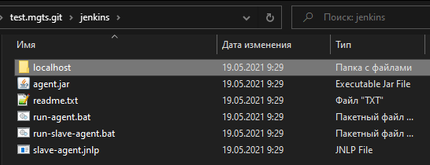
Файл run-agent.bat
java -Dfile.encoding=UTF8 -jar agent.jar -jnlpUrl http://192.168.201.1:8081/computer/agent/slave-agent.jnlp -secret 61394e3055fcf3262be9edb83cf65358e0dc08519ea53880f6c41a5d3b666139 -workDir "C:\Autotests\test.mgts.git\jenkins\workspace_proxy"
Файл run-slave-agent.bat
javaws slave-agent.jnlp
Запуск на сервере run.bat
cd C:\Autotests\test.mgts.git\selenium\
start C:\Autotests\test.mgts.git\selenium\run_selenium_server.bat
TIMEOUT /T 10
cd C:\Autotests\test.mgts.git\jenkins\
start C:\Autotests\test.mgts.git\jenkins\run-agent.bat
Инструкция:
|
НАСТРОЙКА И ЗАПУСК АГЕНТА ========================= 1. Открыть "Настройки Jenkins" http://185.103.132.139:8080/manage 2. Перейти в "Глобальные настройки безопасности" http://185.103.132.139:8080/configureSecurity/ 3. В разделе Agents включить флаг TCP port for JNLP agents в состояние Случайный/Random 4. Сохранить настройки 5. Вернуться в "Настройки Jenkins" http://185.103.132.139:8080/manage 6. Перейти в "Управление средами сборки" http://185.103.132.139:8080/computer/ 7. Нажать на кнопку "Новый узел" (New Node) 7.1 ввести наименование (например: proxy) 7.2 включить флаг Permanent Agent 7.3 нажать ОК 7.4 Описание: Тестирование с помощью BrowserMob Proxy 7.5 Количество процессов-исполнителей: 1 7.6 Корень удаленной ФС: C:\Program Files (x86)\Jenkins\workspace_proxy 7.7 Метки: proxy 7.8 Использование: Use this node as much as possible 7.9 Способ запуска: Launch agent via Java Web Start (все параметры оставить по умолчанию) 7.10 Доступность: Keep this agent online as much as possible 7.11 Node Properties: не включать флаги 7.12 нажать кнопку Save 8. Вернуться в "Управление средами сборки" http://185.103.132.139:8080/computer/ 9. В таблице нажать на proxy 10. Несколько способов запуска агента 10.1 способ №1: выполнить команду javaws http://185.103.132.139:8080/computer/proxy/slave-agent.jnlp
10.2 способ №2: скачать файл agent.jar по ссылке http://185.103.132.139:8080/jnlpJars/agent.jar и выполнить команду java -jar agent.jar -jnlpUrl http://185.103.132.39:8080/computer/proxy/slave-agent.jnlp -secret f598f99da316f0b9071419224c8a870b45c8e11a2b4dbc8e560a4bbafcf6b373 -workDir "C:\Program Files (x86)\Jenkins\workspace_proxy"
11. Настройка Job для работы с агентом 11.1 включить параметр "Ограничить лейблы сборщиков, которые могут исполнять данную задачу" 11.2 в поле Label Expression ввести метку proxy |
1) Менеджер агентов

2) Список доступных агентов
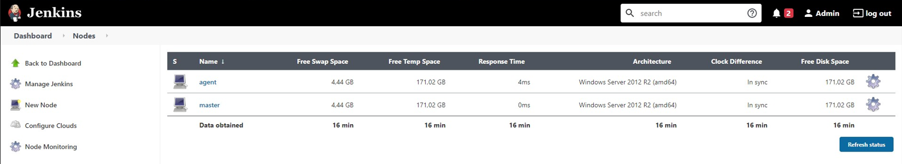
3) Конфигурация агента
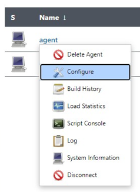
4) Путь к папке с агентом
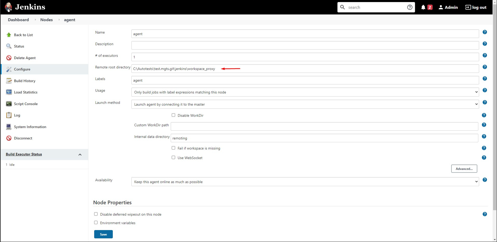
5) Выбор агента в настройках JOB
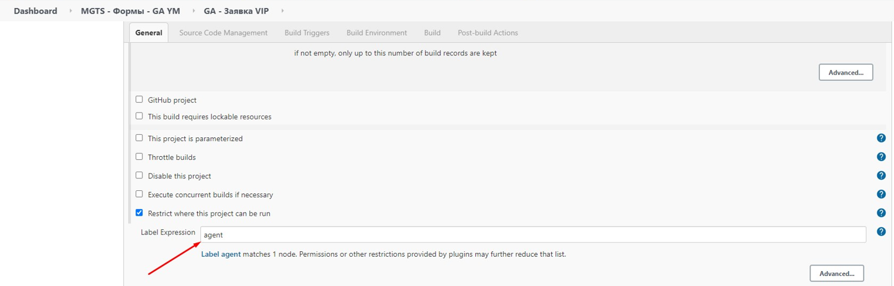
Created with the Personal Edition of HelpNDoc: Easily create Qt Help files
Настройка почты
Настройка почты
1) Переходим в конфигурирование системой. по адресу: http://89.108.109.117:8081/configure
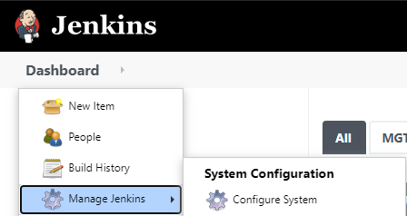
2) Добавляем раздел Email Notification.
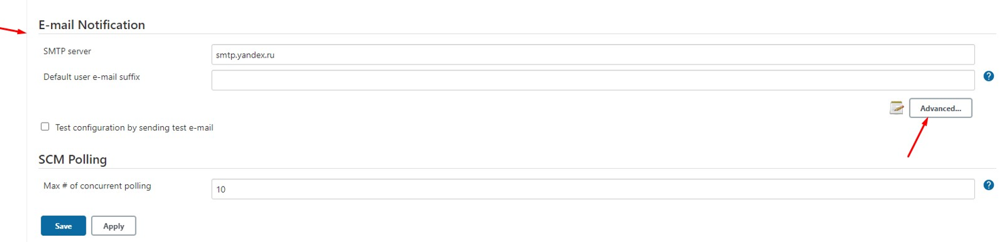
3) Прописываем SMTP сервер, имя и пароль от почты, порт.
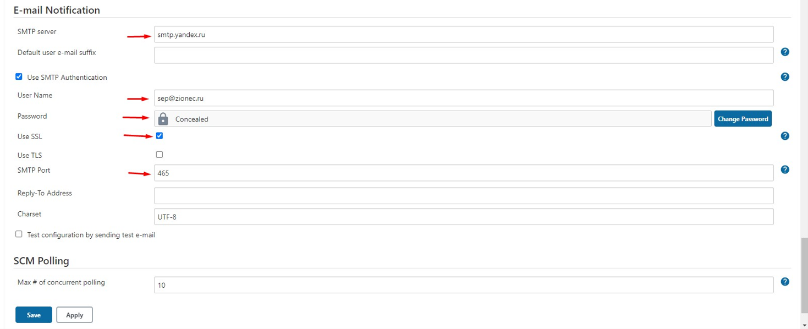
4) В разделе Extended E-mail Notofocation так же прописываем сервер и порт
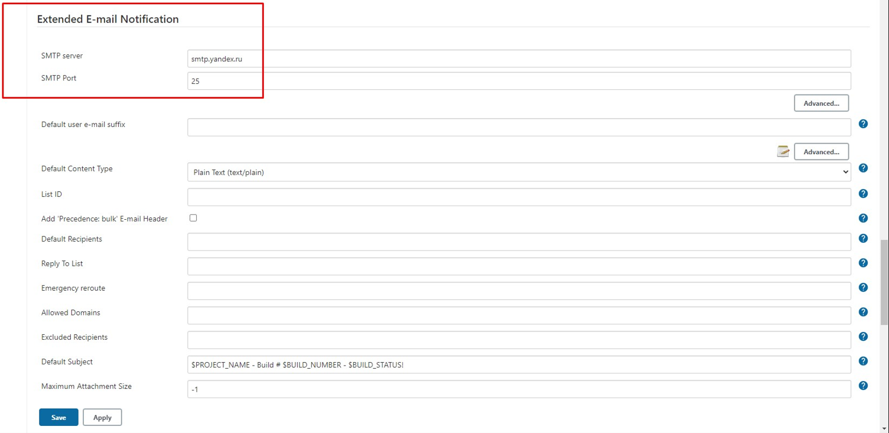
5) Теперь настраиваем почту (yandex.ru)
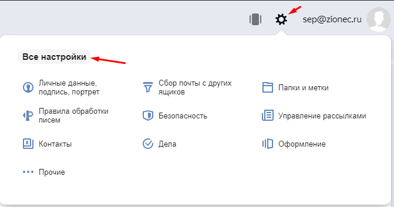
В разделе "Почтовые программы" включем необходимые разрешения
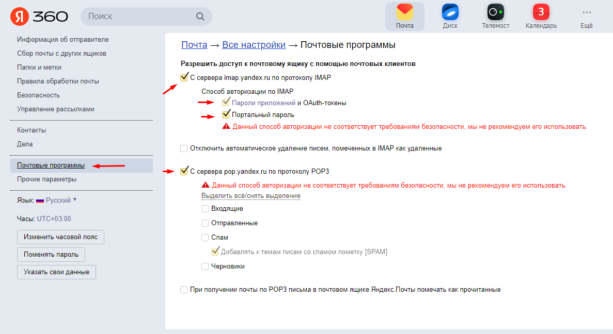
Created with the Personal Edition of HelpNDoc: Create cross-platform Qt Help files
Настройка поддержки русского языка
Настройка поддержки русского языка
1) Для того чтобы Jenkins поддерживал русские символы нужно:
в папке C:\Program Files\Jenkins\ найти файл jenkins.xml и прописать в строке arguments строку -Dfile.encoding=UTF8
<service>
...
<arguments>
-Xrs -Xmx256m -Dhudson.lifecycle=hudson.lifecycle.WindowsServiceLifecycle -Dfile.encoding=UTF8 -jar "%BASE%\jenkins.war" --httpPort=8080 --webroot="%BASE%\war"
</arguments>
...
</service>
2) В настройках Jenkins
Перейдите в Manage Jenkins затем в раздел System Configuration
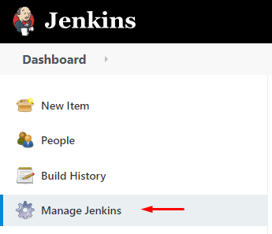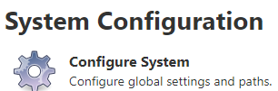
В разделе "Глобальные настройки" включите параметр Environment variables
Добавьте ключ:
Name: JAVA_TOOL_OPTIONS
Value: -Dfile.encoding=UTF8

3) Для того чтобы агент поддерживал русский язык
Чтобы в консоли поддерживался русский язык в коменде запуска агента нужно дописать -Dfile.encoding=UTF8
java -Dfile.encoding=UTF8 -jar agent.jar -jnlpUrl http://192.168.201.1:8081/computer/slave/slave-agent.jnlp -secret 949d1a4e047f6fad3ad0540d7ee94fa71181c2190d0f4cc6f77bb2cbb5c8d4eb -workDir "C:\Autotests\test.mgts.git\jenkins\slave"
Created with the Personal Edition of HelpNDoc: Free help authoring tool
Без фонового режима (slave node)
Без фонового режима (slave node)
Первый вариант
Если автотесты при выполнении не отображаются визуально в браузере нужно сделать следующее:
- Открыть "Диспетчер задач"
- Найти службу Jenkins и остановить её
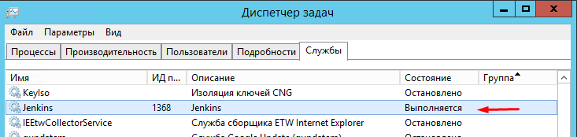
- Открыть командную строку (cmd)
- Перейти в папку C:\Program Files\Jenkins (или C:\Program Files (x86)\Jenkins)
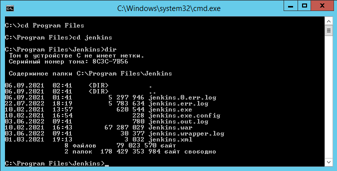
- Выполнить команду: java -jar jenkins.war
В этом случае Jenkins запостится в slave режиме и все автотесты будут запускаться не в фоновом режиме.
ПРИМЕЧАНИЕ: Этот способ является не желательным.
Второй вариант
Иточник: https://www.edureka.co/blog/jenkins-master-and-slave-architecture-a-complete-guide/
Если автотесты при выполнении не отображаются визуально в браузере (выполняются в фоновом режиме) то нужно создать slave агента.
1) Откройте Jenkins и перейдите в Dashboard. Затем нажмите Manage Jenkins
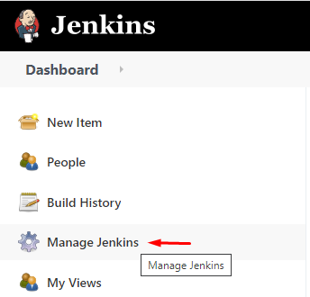
2) Перейдите в раздел Configure Global Security


и в подразделе Agents включите Random
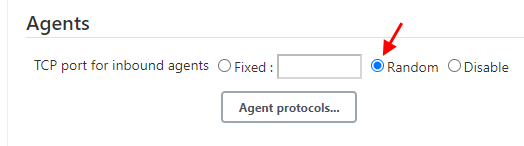
3) Теперь снова перейдите в Dashboard. Затем нажмите Manage Jenkins 
На этот раз перейдите в раздел Manage Nodes and Clouds
 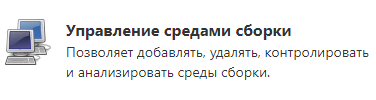
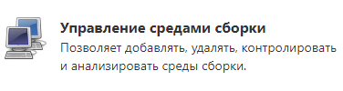
4) Создайте новую ноду нажав на кнопку New Node
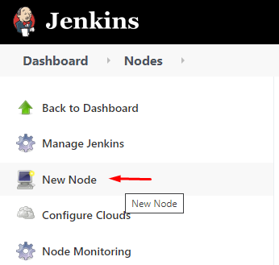
5) Введите имя, выберите тип Permanent Agent и нажмите ОК
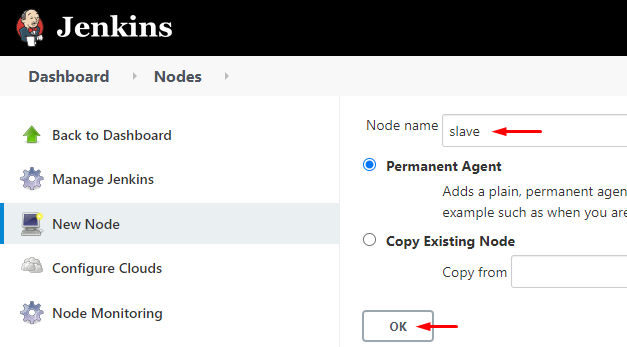
6) Настройте ноду следующим образом
поле "# of executors" - указывается количество потоков
поле "Labels" - очень важное, именно введенное тут имя будет использоваться при назначении ноды автотесту
Укажите путь где будет агент хранить свои данные
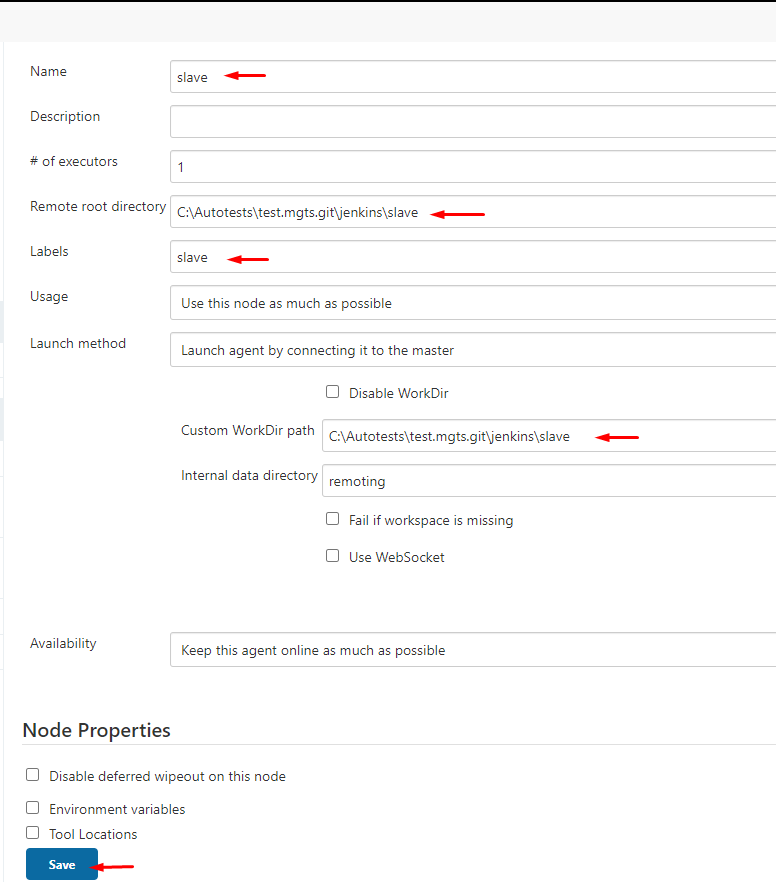
Нажмите кнопку Save.
Если вы хотите чтобы этой нодой пользовались только выбранные задачи тогда выберите эту опцию

7) Нода создана, но она не работает.
Нажмите на имя ноды slave

Вы окажетесь на странице с описанием того что нужно сделать чтобы запустить агента.
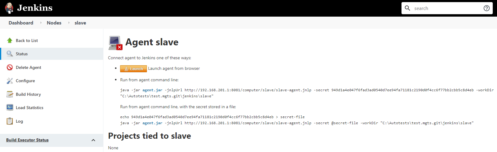
Нажмите на кнопку чтобы скачать файл 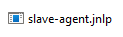
Нажмите на ссылку 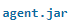чтобы скачать файл 
Поместите оба эти файла в папку C:\Autotests\test.mgts.git\jenkins\slave
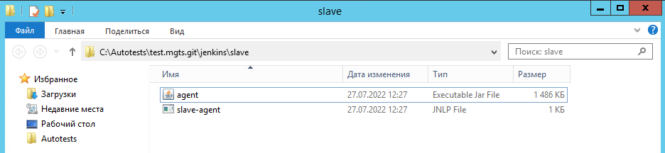
Далее нужно запустить агента командой как указано на странице
Run from agent command line:
java -jar agent.jar -jnlpUrl http://192.168.201.1:8081/computer/slave/slave-agent.jnlp -secret 949d1a4e047f6fad3ad0540d7ee94fa71181c2190d0f4cc6f77bb2cbb5c8d4eb -workDir "C:\Autotests\test.mgts.git\jenkins\slave"
Run from agent command line, with the secret stored in a file:
echo 949d1a4e047f6fad3ad0540d7ee94fa71181c2190d0f4cc6f77bb2cbb5c8d4eb > secret-file java -jar agent.jar -jnlpUrl http://192.168.201.1:8081/computer/slave/slave-agent.jnlp -secret @secret-file -workDir "C:\Autotests\test.mgts.git\jenkins\slave"
ВАЖНО! Чтобы в консоли поддерживался русский язык в коменде нужно дописать -Dfile.encoding=UTF8
java -Dfile.encoding=UTF8 -jar agent.jar -jnlpUrl http://192.168.201.1:8081/computer/slave/slave-agent.jnlp -secret 949d1a4e047f6fad3ad0540d7ee94fa71181c2190d0f4cc6f77bb2cbb5c8d4eb -workDir "C:\Autotests\test.mgts.git\jenkins\slave"
ВАЖНО! Открываем консоль от имени администратора и выполняем команду
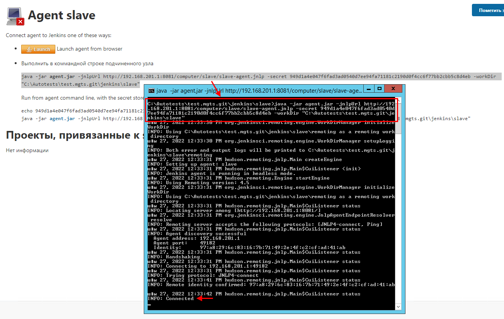
в консоли по завершению появится сообщение Connecter что означает что агент подключен.
Теперь если посмотреть в список агентов мы видим как slave показан активным (без красного квадратика)

8) Подключение автотеста к ноде.
Создайте задачу которая запускает автотест.
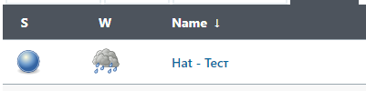

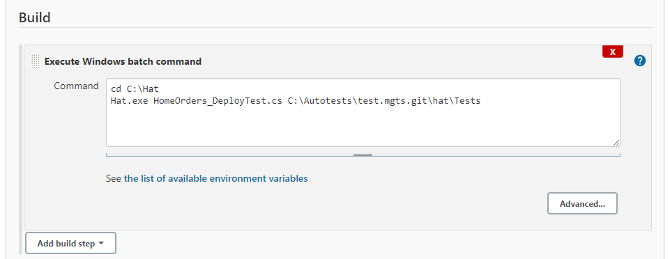
В настройках задачи включите опцию Restrict where this project can be run
затем введите имя ноды slave (система обязательно должна её обнаружить)
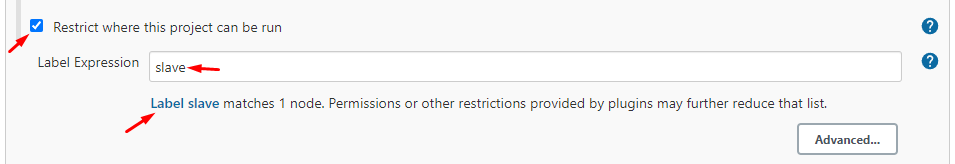
Нажмите на кнопку Apply и Save
9) Запустите задачу с автотестом
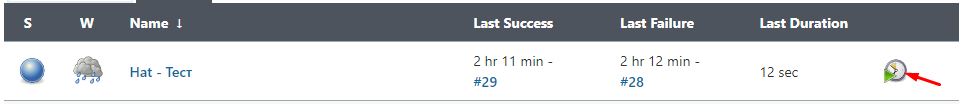
В окне агентов в одном из потоков появится процесс
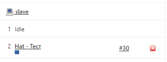
Если произошла ошибка при которой отказано в доступе
Браузер Hat версия 1.1.1 (19.07.2022) Запуск браузера... Проект открыт (версия проекта: 1.1.1)
- - - - - - - - - - - - - - - - - - - - - - - - - - - -
Произошла ошибка: System.UnauthorizedAccessException: Отказано в доступе по пути "C:\Autotests\test.mgts.git\hat\Tests\reports\Report-HomeOrders_DeployTest.html". в System.IO.__Error.WinIOError(Int32 errorCode, String maybeFullPath) в System.IO.File.InternalDelete(String path, Boolean checkHost) в System.IO.File.Delete(String path) в Hat.Report.SaveReport(Boolean testSuccess) - - - - - - - - - - - - - - - - - - - - - - - - - - - -
Возможно что аген не был запущен от имени администратора (агент обязательно должен запускаться от имени администратора)
Возможно папка в которой находятся автотесты обладает блокирующими правами (перенесите автотесты в другое место на компьютере)
10) Поддержка русского языка в консоли
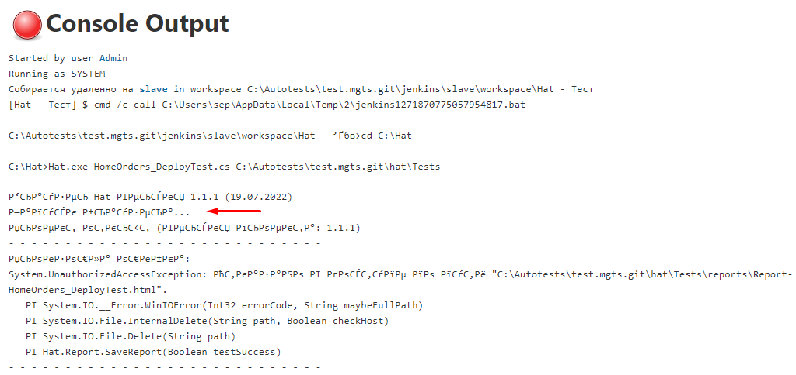
Чтобы в консоли поддерживался русский язык в коменде запуска агента нужно дописать -Dfile.encoding=UTF8
java -Dfile.encoding=UTF8 -jar agent.jar -jnlpUrl http://192.168.201.1:8081/computer/slave/slave-agent.jnlp -secret 949d1a4e047f6fad3ad0540d7ee94fa71181c2190d0f4cc6f77bb2cbb5c8d4eb -workDir "C:\Autotests\test.mgts.git\jenkins\slave"
Created with the Personal Edition of HelpNDoc: Generate EPub eBooks with ease
GitLab Ci/CD Runner
# Практика использования GitLab Ci/CD для запуска автотестов
Документация: https://docs.gitlab.com/runner/
Установка GitLab Runner на Windows 10
=====================================
Документация: https://docs.gitlab.com/runner/install/windows.html
1. Создать папку C:\GitLab-Runner
2. Скачать х86 приложение https://gitlab-runner-downloads.s3.amazonaws.com/latest/binaries/gitlab-runner-windows-386.exe
3. Поместить gitlab-runner-windows-386.exe в папку C:\GitLab-Runner
4. Переименовать gitlab-runner-windows-386.exe в gitlab-runner.exe
5. Запустить командрую строку (cmd) от имени администратора и перейти в папку C:\GitLab-Runner
6. Выполнить команду установки: gitlab-runner.exe install
7. Команда для проверки версии: gitlab-runner --version
8. Команда для запуска: gitlab-runner.exe start
Регистрация GitLab Runner
=====================================
(связать runner с gitlab экземпляром)
Документация: https://docs.gitlab.com/runner/register/index.html
1. Если GitLab Runner запущен его нужно остановить: gitlab-runner.exe stop
2. Выполнить команду регистрации: gitlab-runner.exe register
3. Если сообщение "PANIC: read..." - нужно остановить регистрацию командок: gitlab-runner.exe register stop
4. Сообщение: "Please enter the gitlab-ci coordinator URL (e.g. https://gitlab.com/)" - вставить строку https://git.anmarto.ru/ в место мигающего курсора и нажмите enter
5. Сообщение: "Please enter the gitlab-ci token for this runner" - необходимо ввести токен
5.1 Войдите в свой профиль на GitLab (https://git.anmarto.ru/)
5.2 Перейдите в свой проект (https://git.anmarto.ru/Somov-QA/test.ci.cd)
5.3 Перейдите в настройки Settings -> CI/CD
5.4 В разделе "Runners" нажать кнопку "Expand"
5.5 Внизу в разделе "Set up a specific Runner manually" третьим пунктом "3. Use the following registration token during setup" находится токен "kzsznxvTNRhBn6qH67Sz" скопируйте его нажав на кнопку копирования
6. После того как получили токен вернитесь в командную строку и введите токен в место мигающего курсора и нажмите enter
7. Сообщение: "Please enter the gitlab-ci description for this runner:" - нужно ввести описание (например my-runner1) и нажать enter
8. Сообщение: "Please enter the gitlab-ci tags for this runner (comma separated):" - необходимо ввести: ssh, ci и нажать enter
9. Сообщение: "Please enter the executor: docker-windows, docker-ssh, parallels, ssh, docker-ssh+machine, kubernetes, custom, docker, shell, virtualbox, docker+machine:" - нужно ввести исполнителя, введите: shell и нажать enter
Если всё было сделано верно в результате получите сообщение: "Runner registered successfully. Feel free to start it, but if it's running already the config should be automatically reloaded!"
10. Команда для запуска: gitlab-runner.exe start
Проверка запущен ли GitLab Runner
=====================================
1. Войдите в свой профиль на GitLab (https://git.anmarto.ru/)
2. Перейдите в свой проект (https://git.anmarto.ru/Somov-QA/test.ci.cd)
3. Перейдите в настройки Settings -> CI/CD
4. В разделе "Runners" нажать кнопку "Expand"
5. В подразделе "Runners activated for this project"
Должен присутствовать "my-runner1" который мы создали ранее - всё корректно, runner зарегистрирован и запущен!
GitLab CI/CD Getting Started
=====================================
(в системную переменную PATH добавьте путь к установленному Git)
1. В корневой папке проекта репозитория C:\GIT\test.ci.cd\ нуобходимо создать файл .gitlab-ci.yml
2. Описать файл следующим образом. (ci является тэгом из раздела Runners activated for this project)
demo_job_1:
script:
- echo Hello World
tags:
- ci
3. Провести валидацию содержимого файла с помощью ресурса http://www.yamllint.com/
4. Сделать commit и выполнить push в GitLab репозиторий
5. Запустить GitLab Runner командой: gitlab-runner.exe start
6. По адресу C:\GitLab-Runner\builds\WsHbJuaa\0\Somov-QA\ создайте папку \test.ci.cd\
7. Внести любые изменения в проекте и выполнить push в GitLab репозиторий
Автоматизированный тест Selenium (JavaScript & NodeJS)
=====================================
Описание методов Selenium: https://selenium.dev/selenium/docs/api/java/org/openqa/selenium/package-summary.html
Структура проекта:
[node_modules] - папка с установленными модулями selenium-webdriver
chromedriver.exe - webrdiver для браузера Chrome
geckodriver.exe - webrdiver для браузера FireFox
test.js - автоматизированный тест
1. Скачать и установить NodeJS https://nodejs.org
2. Скачать и установить Visual Studio Code https://code.visualstudio.com/
3. Официальная страницы Selenium-Webdriver на NPM https://www.npmjs.com/package/selenium-webdriver
4. Webdriver для Chrome http://chromedriver.storage.googleapis.com/index.html
5. Webdriver для FireFox https://github.com/mozilla/geckodriver/releases/
6. Установка Selenium-Webdriver командой: npm install selenium-webdriver
7. В папке C:\GitLab-Runner\builds\WsHbJuaa\0\Somov-QA\test.ci.cd\ так же необходимо выполнит установку Selenium-Webdriver командой: npm install selenium-webdriver
8. Чтобы запустить автотест нужно выполнить команду: node test.js
Created with the Personal Edition of HelpNDoc: Benefits of a Help Authoring Tool
Soft
Программы
Битрикс24 - Установите приложение на компьютер, чтобы работать над проектами и задачами, общаться с коллегами в чатах и по видеосвязи.
https://www.bitrix24.ru/features/desktop.php
WinSCP - это графический клиент SFTP (SSH File Transfer Protocol) для Windows с открытым исходным кодом. Он также поддерживает [устаревший] протокол SCP (Secure Copy Protocol). Предназначен для защищённого копирования файлов между компьютером и серверами, поддерживающими эти протоколы.
https://winscp.net/eng/download.php
Double Commander - двухпанельный файловый менеджер с открытым исходным кодом, работающий под Linux, Microsoft Windows, а также в Mac OS X и FreeBSD.
https://doublecmd.sourceforge.io/
FileZilla - один из лучших бесплатных FTP-менеджеров, который поможет вам скачать и загрузить файлы с FTP-серверов.
https://filezilla.ru/
Notepad++ - свободный текстовый редактор с открытым исходным кодом для Windows с подсветкой синтаксиса, разметки, а также языков описания аппаратуры VHDL и Verilog.
https://notepad-plus-plus.org/downloads/
Visual Studio 2019 - линейка бесплатных интегрированных сред разработки.
https://visualstudio.microsoft.com/ru/vs/
Visual Studio Code - кроссплатформенный редактор исходного кода.
https://code.visualstudio.com/
NetBeans - свободная интегрированная среда разработки приложений.
IntelliJ IDEA - интегрированная среда разработки программного обеспечения на языке программирования Java.
https://www.jetbrains.com/ru-ru/idea/
Eclipse - свободная интегрированная среда разработки модульных кроссплатформенных приложений.
PyCharm - интегрированная среда разработки программного обеспечения на языке программирования Python.
https://www.jetbrains.com/ru-ru/pycharm/
Python - высокоуровневый язык программирования общего назначения с динамической строгой типизацией и автоматическим управлением памятью, ориентированный на повышение производительности разработчика, читаемости кода и его качества, а также на обеспечение переносимости написанных на нём программ.
Sublime Text 3 - кроссплатформенный проприетарный текстовый редактор.
Unity - платформа для разработки 3D-приложений в реальном времени.
https://unity3d.com/ru/get-unity/download/archive
Git - бесплатная распределенная система управления версиями.
SmartGit - визуальный клиент Git с поддержкой GitHub, Bitbucket и GitLab.
https://www.syntevo.com/smartgit/
NodeJS - программная платформа, основанная на движке V8 (транслирующем JavaScript в машинный код), превращающая JavaScript из узкоспециализированного языка в язык общего назначения.
Composer - пакетный менеджер уровня приложений для языка программирования PHP, который предоставляет средства по управлению зависимостями в PHP-приложении.
HeidiSQL - полезный и надежный инструмент, предназначенный для веб-разработчиков с использованием популярного MySQL-сервера, баз данных Microsoft SQL и PostgreSQL.
Postman - платформа совместной работы для разработки API.
Apache JMeter - программное обеспечение для нагрузочного тестирования функционального поведения и измерения производительности.
REST Debugger - для тестирования Rest API
https://www.embarcadero.com/ru/free-tools/rest-debugger
OWASP ZAP - десктопная программа для сканирования сайта.
SiteAnalyzer - эта программа веб-краулер, позволяющий сканировать сайты и проверять их основные технические и SEO-параметры на предмет ошибок и эффективно их исправлять.
Screaming Frog SEO Spider - десктопная программа для сканирования сайта.
https://www.screamingfrog.co.uk/
Android Studio - интегрированная среда разработки (IDE) для работы с платформой Android.
https://developer.android.com/studio
Katalon Studio - набор инструментов для автоматизированного тестирования веб и мобильных приложений.
TestComplete - набор инструментов для автоматизированного тестирования.
https://smartbear.com/product/testcomplete/overview/
Gatling - лучший инструмент разработчика для нагрузочного тестирования ваших веб-приложений.
Selenium - официальный сайт Selenium (инструмент для автоматизации действий веб-браузера)
Appium - официальный сайт Appium (инструмент автоматизации для запуска тестов мобильных веб-приложений и гибридных приложений на Android или iOS с помощью веб-драйвера)
http://appium.io/
ChromeDriver - драйвер для Selenium позволяет работать тестам в браузере Chrome.
https://chromedriver.chromium.org/
.NET Framework 3.5 SP1 - программная платформа, выпущенная компанией Microsoft.
https://www.microsoft.com/ru-ru/download/details.aspx?id=22
Visual C++ Redistributable - библиотека С++
https://docs.microsoft.com/ru-RU/cpp/windows/latest-supported-vc-redist?view=msvc-160
JDK 8 (Java SE Development Kit) - бесплатно распространяемый компанией Oracle Corporation комплект разработчика приложений на языке Java.
https://www.oracle.com/java/technologies/javase/javase-jdk8-downloads.html
https://www.oracle.com/java/technologies/downloads/#java8
JRE 8 (Java SE Runtime Environment) - бесплатно распространяемый компанией Oracle Corporation комплект разработчика приложений на языке Java.
https://www.oracle.com/java/technologies/javase-jre8-downloads.html
https://www.oracle.com/java/technologies/downloads/#java8
OpenOffice - офисным пакетом с открытым исходным кодом.
https://www.openoffice.org/ru/
LibreOffice - офисным пакетом с открытым исходным кодом.
https://www.libreoffice.org/discover/libreoffice/
VM VirtualBox - программный продукт виртуализации для операционных систем
Oracle VM VirtualBox - программный продукт виртуализации для операционных систем
https://www.oracle.com/ru/virtualization/technologies/vm/downloads/virtualbox-downloads.html
Bandicam - высококачественный захватчик видео и скриншотов из игр, из фильмов, любой области рабочего стола.
WAMP Server - платформы для веб-разработки под Windows: сервер Apache, интерпретатора скриптов PHP и базы данных MySQL
https://www.wampserver.com/ru/
AMPPS - платформы для веб-разработки под Windows: сервер Apache, интерпретатора скриптов PHP и базы данных MySQL.
XAMPP - платформы для веб-разработки под Windows: сервер Apache, интерпретатора скриптов PHP+Perl и базы данных MariaDB.
https://www.apachefriends.org/index.html
Open Server - портативная серверная платформа и программная среда под Windows: сервер Apache, интерпретатора скриптов PHP и базы данных MySQL.
MySQL - свободная реляционная система управления базами данных.
https://www.mysql.com/products/workbench/
PHP - препроцессор гипертекста, скриптовый язык общего назначения, интенсивно применяемый для разработки веб-приложений.
HelpNDoc - программа для создания справочной документации в разнообразных форматах, включая CHM, HTML, PDF или совместимых с Word.
Figma - Онлайн-сервис для разработки интерфейсов и прототипирования с возможностью организации совместной работы в режиме реального времени.
https://www.figma.com/downloads/
PerfectPixel - Это расширение помогает Вам разрабатывать сайт с попиксельной точностью.
https://www.welldonecode.com/perfectpixel/
https://chrome.google.com/webstore/detail/perfectpixel-by-welldonec/dkaagdgjmgdmbnecmcefdhjekcoceebi
Remote Debugging on Android with Chrome - Отладка Web приложения на устройстве через браузер на компьютере chrome://inspect/#devices.
https://developer.chrome.com/docs/devtools/remote-debugging/
Advanced IP Scanner - надежный и бесплатный сетевой сканер для анализа локальных сетей.
https://www.advanced-ip-scanner.com/ru/
Charles - HTTP-прокси / HTTP-монитор / обратный прокси-сервер, который позволяет разработчику просматривать весь трафик HTTP и SSL / HTTPS между их компьютером и Интернетом.
Fiddler - Инструмент прокси-сервера для веб-отладки.
https://www.telerik.com/fiddler
Cheat Engine - Совершенно бесплатное приложение, посредством которого можно без особых проблем накрутить себе те или иные ресурсы в одной из одиночных игр, причем и в той, что проходится в режиме онлайн.
CurrPorts - Мониторинг портов на вашем компьютере.
http://www.nirsoft.net/utils/cports.html
Device ID (Android) - Программа позволяет быстро определить идентификатор Android устройства без подключения к ПК.
https://play.google.com/store/apps/details?id=com.evozi.deviceid
Export Sheet Data - Надстройка с открытым исходным кодом для Google Таблиц, которая позволяет пользователям экспортировать листы в формате XML или JSON.
https://gsuite.google.com/marketplace/app/export_sheet_data/903838927001
File Manager HD (FTP Android) - Файловый клиент для пересылки файлов медлу устройством и компьютером.
https://apkpure.com/cm-file-manager-hd/com.rhmsoft.fm.hd
Free Video to GIF Converter - Программа для быстрого создания GIF-файлов из своих видео.
https://free-video-to-gif-converter.ru.uptodown.com/windows
HiroMacro (Android) - Автокликер для Android устройств с сенсорным управлением.
https://play.google.com/store/apps/details?id=com.prohiro.macro&hl=ru
IETester - Позволяющая просматривать и тестировать сайты в IE8 beta 1, IE7 IE 6 и IE5.5 под Vista и XP и т.д.
https://www.my-debugbar.com/wiki/IETester/HomePage
iExplorer - Многофункциональный файловый менеджер для iOS устройств.
https://macroplant.com/iexplorer
iBrowse - Приложение позволяет ПК получать доступ к файловой системе устройства iOS.
iFunbox - Позволяет устанавливать пакеты IPA на устройства iOS.
https://www.i-funbox.com/en/index.html
iPhone Configuration Utility - Приложение для создания профилей конфигурации для вашего iPhone и пр.
https://iphone-configuration-utility.ru.malavida.com/
iTools - Решение всё-в-одном для управления iPhone, iPad, iPod.
https://ru.thinkskysoft.com/itools/
iTunes - Приложение для работы с iPhone, iPad, iPod.
https://www.apple.com/ru/itunes/
ShareX - Приложение для создания скриншотов, видео и мгновенной их загрузки в Dropbox.
Joxi - Приложение для создания скриншотов.
Lightshot - Приложение для создания скриншотов.
Monosnap - Приложение для создания скриншотов.
NoxPlayer - Идеальный Android эмулятор для игр на ПК.
Pastebin - веб-приложение, которое позволяет загружать отрывки текста, обычно фрагменты исходного кода, для возможности просмотра окружающими.
The Identifiers - Программа позволяет быстро определить идентификатор iOS устройства без подключения к ПК.
https://apps.apple.com/us/app/the-identifiers/id564618183
Wireshark - Программа-анализатор трафика для компьютерных сетей Ethernet и некоторых других.
Google Analytics Debugger - A devtools extension for exposing tracking beacon data to developers.
https://keithclark.github.io/gadebugger/
GA Debugger (Chrome) - Google Analytics Debugger is a devtools extension for exposing tracking beacon data to developers.
https://chrome.google.com/webstore/detail/google-analytics-debugger/jiokjpcfnipnicblkgdklknjjeohnfln
Created with the Personal Edition of HelpNDoc: Free EPub producer
Copyright © 2022 by Somov Evgeniy. All Rights Reserved.